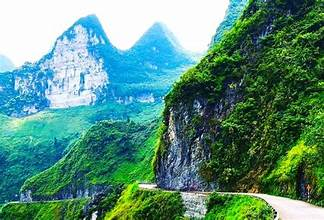
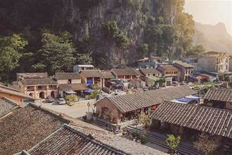
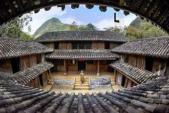
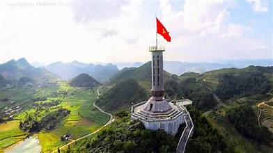
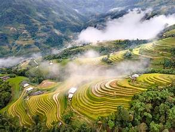
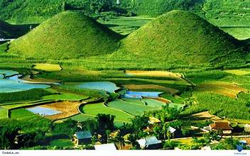

Đèo Mã Pí Lèng
Đèo Mã Pí Lèng nằm trên con đường huyết mạch của tỉnh Hà Giang, nối liền các huyện Đồng Văn và Mèo Vạc. Với những dãy núi đá vôi chập chùng, đèo Mã Pí Lèng được xem là một trong những con đèo đẹp nhất Việt Nam. Cảnh vật hùng vĩ, kỳ bí, đặc biệt là con sông Nho Quế uốn lượn dưới chân đèo, tạo nên một bức tranh thiên nhiên tuyệt đẹp.
Phố cổ Đồng Văn
Phố cổ Đồng Văn là một di tích lịch sử văn hóa nổi bật của vùng cao nguyên đá Đồng Văn. Với hơn 100 năm tuổi, nơi đây giữ gìn được nét kiến trúc cổ kính của các dân tộc H'mông, Hoa và Tày. Du khách đến đây không chỉ được chiêm ngưỡng những ngôi nhà cổ mà còn được trải nghiệm không khí nhộn nhịp của chợ phiên vào mỗi sáng cuối tuần.
Dinh thự vua Mèo
Dinh thự vua Mèo tọa lạc tại xã Sà Phìn, huyện Đồng Văn, là một trong những công trình kiến trúc đặc sắc của vùng cao nguyên đá. Đây là nơi sinh sống của gia đình Vương Chí Sình – người đã góp phần xây dựng và phát triển vùng đất này. Dinh thự có sự kết hợp giữa phong cách kiến trúc phương Tây và truyền thống dân tộc, tạo nên một nét độc đáo, khác biệt.
Cột cờ Lũng Cú
Cột cờ Lũng Cú là một biểu tượng của sự kiên cường và lòng yêu nước của người dân Việt Nam. Đứng tại đây, bạn có thể chiêm ngưỡng toàn cảnh thiên nhiên hùng vĩ của vùng đất phía Bắc, đồng thời cảm nhận được niềm tự hào khi đứng ở điểm cực Bắc của Tổ quốc. Cột cờ cao 33m, là nơi lưu giữ những ký ức lịch sử của dân tộc.
Ruộng bậc thang Hoàng Su Phì
Ruộng bậc thang Hoàng Su Phì là một trong những cảnh quan thiên nhiên độc đáo và đẹp nhất ở Hà Giang. Những thửa ruộng bậc thang uốn lượn quanh các sườn đồi, được xây dựng bởi bàn tay cần cù của người dân nơi đây. Mùa lúa chín, những thửa ruộng trở thành bức tranh tuyệt mỹ, thu hút rất nhiều du khách đến tham quan và chiêm ngưỡng.
Núi Đôi Quản Bạ
Núi Đôi Quản Bạ là một địa danh nổi tiếng với hai ngọn núi giống như đôi gò bồng đào. Nằm cách trung tâm huyện Quản Bạ khoảng 20 km, núi Đôi đã trở thành biểu tượng của vùng đất Hà Giang. Sở dĩ núi có tên gọi này vì hình dáng đặc biệt của hai ngọn núi giống hệt như đôi gò bồng đào của người phụ nữ. Đây là điểm đến lý tưởng cho những ai yêu thích thiên nhiên hoang sơ và vẻ đẹp kỳ vĩ của đất trời.